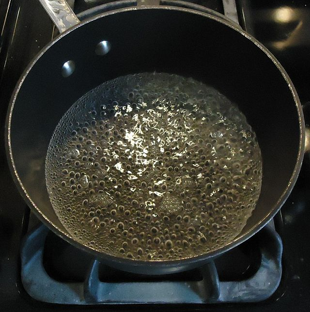

How to Make Boiled Water: A guide for lazy people with little motivation (like me!)

Your typical pot full of delicious, nutritious and healthy boiled water.
Boiled water is one of the most basic dishes a person can make, don't be surprised if you find that many young adults don't know how to prepare it.
Ingredients:
- Drinkable water
- A big pot
- A stove
- 1 mug
Steps:
The steps part assumes you have a pot, a stove and a spoon.
- First, start your stove to medium heat, place your pot and let it heat for about 3 minutes.
- Then add your tap water or any other type of drinkable water.
- When you see that your water has reached its boiling point, turn the stove off and let the water rest for a while.
- Now enjoy a warm drink on a cold night!
Back to Home